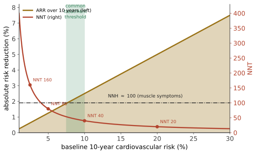

本页目录
预防 I · 心血管风险与他汀/降压的决策分析
这一页是本站方法论的集中演示：同一种药，对不同人的价值可以相差十倍以上，而决定这个差别的不是化验单上的某个数字，而是这个人的总体绝对风险。理解了这一页，你就理解了现代预防医学的全部逻辑转变。
地区与年份边界：本页用美国 ACC/AHA 2019、USPSTF 2022 与英国 NICE NG238（2023）作为不同体系的例子；风险计算器、他汀/降压阈值和血压目标不能跨地区直接搬用，应以当地现行指南和适配人群的方程为准。
1. 从"指标异常"到"总体风险"
旧范式：胆固醇 > 阈值 → 治疗；血压 > 阈值 → 治疗。 新范式：估算个体的 10 年（或终生）心血管事件绝对风险 → 用风险决定是否治疗与治疗强度。
为什么必须转变：由第 06 页，ARR = 基线风险 × RRR。同样的降脂幅度，在高风险者身上产生的绝对获益是低风险者的十倍以上。而"胆固醇轻度升高的低风险年轻人"与"胆固醇正常的糖尿病老年吸烟者"，后者的绝对风险高得多。
风险评分工具（各地区不同，必须用适配本地人群的）：Framingham、SCORE2（欧洲）、Pooled Cohort Equations（美国）、China-PAR（中国）。要点：这些方程在与其推导人群不同的群体中会系统性高估或低估——用错人群的方程是一个真实且常见的错误。
2. 他汀一级预防的完整账

| 10 年基线风险 | ARR（10 年） | NNT | 解读 |
|---|---|---|---|
| 2.5% | 0.6% | 160 | 多数人不会选择终身服药 |
| 5% | 1.25% | 80 | 边缘 |
| 7.5% | 1.9% | 53 | 常见阈值 |
| 10% | 2.5% | 40 | 多数指南推荐 |
| 20% | 5% | 20 | 明确推荐 |
| 30%（如已有冠心病，二级预防） | 7.5% | 13 | 强推荐 |
危害侧：肌肉症状是最常被报告的；但值得注意的是，在双盲随机试验中，他汀组与安慰剂组的肌肉症状发生率差异远小于开放标签观察中的报告率——n-of-1 随机试验（同一患者交替服用他汀与安慰剂）显示大部分症状在两种情况下都出现。这是"反安慰剂效应（nocebo）"最干净的证据之一（第 19 页）。横纹肌溶解极罕见；新发糖尿病的绝对增加很小（在高风险人群中获益仍远超此项）。
这一页的关键教学点："该不该吃他汀"不是一个医学事实问题，而是一个在给定 NNT/NNH 下的价值判断。一个厌恶长期服药的人在 NNT = 80 时拒绝是完全理性的；另一个人在同样数字下接受也是理性的。 医生的工作是把数字给准，不是替人选择（第 24 页）。
3. 降压：目标值之争
降压的获益证据非常扎实（多种机制不同的药物一致降低卒中与心衰，第 09 页的"替代终点被验证"标准）。争论在于目标值。
SPRINT 试验（强化目标收缩压 < 120 vs < 140）显示强化组主要心血管事件与全因死亡降低。但必须同时讲三件事：
- SPRINT 的血压测量方式是"无人值守自动诊室血压"，其读数通常低于常规诊室血压——因此不能把"120"直接搬到常规测量上。这是一个真实且广泛的误读来源；
- 强化组的不良事件更多：低血压、晕厥、电解质紊乱、急性肾损伤；
- 纳入人群不含糖尿病患者与卒中病史者（ACCORD-BP 在糖尿病人群中未显示同样获益）——外推需谨慎（第 05 页）。
实践含义：目标值应个体化——年轻、高风险、耐受良好者更强化；高龄、体位性低血压、多重用药者更保守。 指南之间的分歧（第 09 页）正反映了这个权衡。
降压药的选择：一线四类（噻嗪类利尿剂、ACEI/ARB、钙通道阻滞剂）在硬终点上大体相当（🔗 姊妹站第 15 页给机制），选择主要由合并症、不良反应与成本决定。β 阻滞剂不作为无合并症高血压的首选（在预防卒中上略逊）。
一个有证据支持的实践更新：起始即用低剂量联合治疗（单片复方）优于单药加量——降压更快、依从性更好、不良反应不增加。
4. 阿司匹林：一级预防的反转
这是过去十年最重要的预防医学反转之一，也是本站最好的教学案例。
旧建议：中年人常规服用小剂量阿司匹林预防心血管病。
2018 年前后的三项大型 RCT（ASPREE、ARRIVE、ASCEND）显示：在当代一级预防人群中，阿司匹林的心血管获益很小，而大出血的绝对增加与之相当或更大；ASPREE 在健康老年人中甚至观察到全因死亡略高。主要指南随后收窄或取消了一级预防的常规推荐。
为什么会反转：背景风险下降了。随着他汀、控烟、降压的普及，当代人群的基线心血管风险远低于 1980–90 年代的试验人群 → 由 ARR = 基线 × RRR，绝对获益随之缩小，而出血风险不变 → 收益-危害天平翻转。
这个机制值得反复咀嚼：一项治疗的价值会随着其他治疗的进步而下降。"过去的试验结论可能因为背景改变而失效"是一条一般性教训，🔗 与你在预测层遇到的"regime 变化使历史校验失效"是同一件事。
二级预防（已有心血管事件者）中阿司匹林的获益仍然明确——这个区分绝不能混淆。
5. 生活方式干预：证据强度分层
| 干预 | 证据 | 备注 |
|---|---|---|
| 戒烟 | 最强，效应量最大 | 获益在数年内显著；没有任何药物能比得上 |
| 体力活动 | 强（观察性一致 + 机制 + 部分试验） | 剂量-反应，从久坐到少量活动的边际收益最大 |
| 降钠 | 中等；对已有高血压者更明确 | 极低钠的最优点有争议 |
| 地中海饮食模式 | 中等（PREDIMED 试验；注意该试验因随机化问题重新分析发表，结论方向未变但强度调整） | 饮食试验的方法学困难极大（无法盲法、依从性测量困难） |
| 减重 | 对代谢指标明确；对硬终点证据较复杂 | GLP-1 类药物的 SELECT 试验提供了新证据 |
| 限酒 | "少量饮酒有益"的旧结论已被大幅削弱 | 戒酒者偏倚（把因病戒酒者算进"不饮酒组"）解释了 J 形曲线的相当部分；孟德尔随机化不支持保护作用 |
最后一行是本站最喜欢的一个例子："适量饮酒有益心脏"这个曾被广泛接受的结论，主要毁于一个选择偏倚——不饮酒组混入了因健康问题而戒酒的人（第 07 页）。修正这个偏倚后，保护效应大幅缩水或消失。
6. 把这一页收成一个决策流程
- 算总体绝对风险（用适配人群的工具）；
- 算这个风险下的 ARR 与 NNT；
- 列出危害与 NNH，包括长期服药本身的负担；
- 确认患者的价值观：他更怕事件还是更怕吃药与副作用？
- 优先做效应量最大的事：戒烟 > 大多数药物；
- 定期重估：风险会变，证据会变，背景发生率也会变（阿司匹林的教训）。
参考与更新
复审记录：最后复审 2026-08-02；按六个月规则，下一次常规复审不晚于 2027-02-02。若安全信号、指南/监管更新或动态清单变化，则提前复审；具体适用地区以各条来源与当地最新版本为准。
- ACC/AHA 2019 Primary Prevention guideline（心血管一级预防；2019；美国。）
- USPSTF statin use in adults（他汀一级预防建议；2022；美国。）
- NICE NG238: Cardiovascular disease: risk assessment and reduction（心血管风险评估与降脂；2023；英国。）
下一页：糖尿病——把同样的框架用到一个"指标 vs 结局"分歧最尖锐的领域。